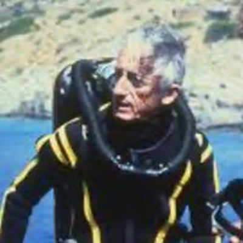
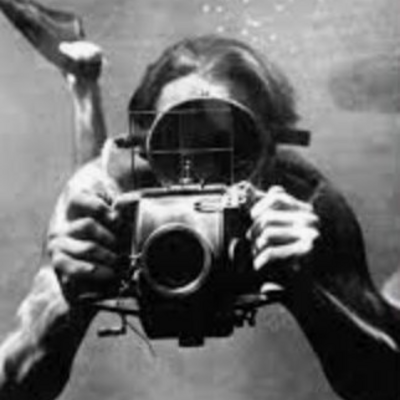
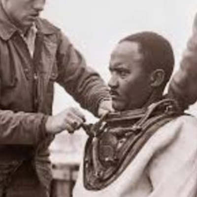
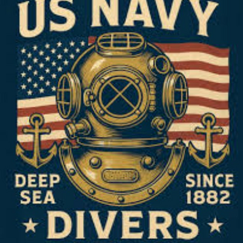
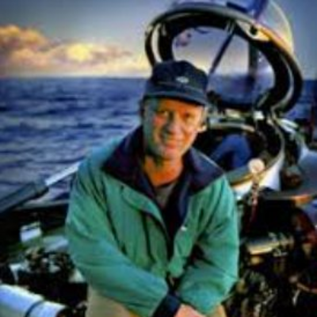
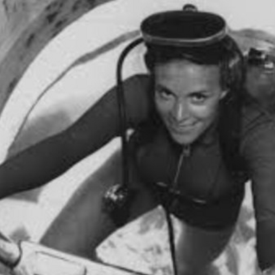
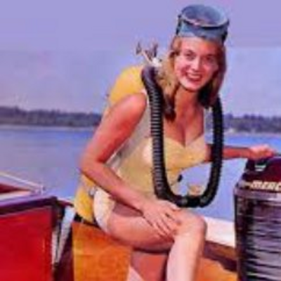
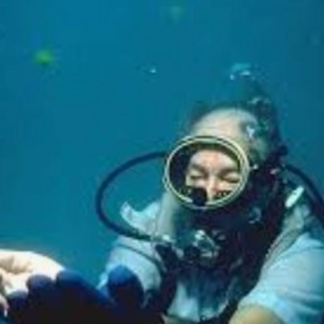
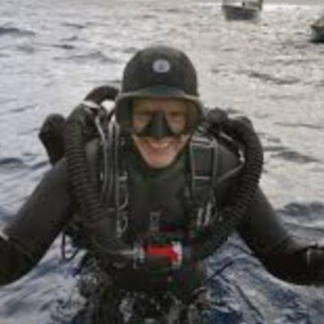

The pioneers, warriors, and explorers who charted the course beneath the surface. Their courage made everything that followed possible.
Every time a diver descends below the surface, they stand on the shoulders of legends who risked everything to explore the unknown. These are the icons who built the world beneath the waves.

Co-inventor of the Aqua-Lung, the device that gave humanity the ability to breathe underwater. Cousteau spent a lifetime revealing the ocean's wonders through film, research, and tireless exploration aboard the Calypso. His work transformed scuba diving from a military tool into a global passion and awakened the world to marine conservation.

Austrian biologist and filmmaker who was among the first to document marine life on camera. Before Cousteau became a household name, Hass was already exploring the deep with custom-built camera housings, producing groundbreaking underwater documentaries and publishing over 25 books on ocean life and coral reef ecosystems.
The man who saw the deep first. Using a hollow steel sphere called the Bathysphere, Beebe descended to 3,028 feet off the coast of Bermuda in 1934, setting a depth record that stood for decades. His live radio broadcasts from the deep captivated the world and proved that exploration of the ocean's darkest zones was possible.
"The sea, once it casts its spell, holds one in its net of wonder forever."Jacques Cousteau

Born to a sharecropping family in Kentucky, Brashear enlisted in the Navy in 1948 and became the first African American Navy Master Diver in 1970. After losing his left leg in a 1966 nuclear weapon recovery operation off the coast of Spain, he refused medical retirement, secretly returned to diving, and proved he could still perform at the highest level. His story inspired the film Men of Honor.

From the first Navy deep-sea diving school established in 1882 to today's elite Explosive Ordnance Disposal and Special Warfare units, Navy Divers have set the global standard for underwater operations. Salvage, rescue, demolition, combat. Every protocol, every piece of commercial dive equipment, and every safety standard traces its lineage to military diving programs that refined the craft under the most unforgiving conditions imaginable.

Oceanographer, U.S. Naval Reserve commander, and the man who found the Titanic. Ballard's 1985 discovery of the legendary wreck at 12,500 feet transformed deep-sea exploration and pioneered the use of remotely operated vehicles for underwater archaeology. His career spans over 150 deep-sea expeditions and the discovery of hydrothermal vents that rewrote the biology textbooks.

Marine biologist, oceanographer, and former NOAA Chief Scientist, Earle has led more than 100 expeditions and logged over 7,000 hours underwater. In 1979 she walked the ocean floor at 1,250 feet in a JIM suit, deeper than any human before her without a tether. National Geographic's Explorer-in-Residence and founder of Mission Blue, she has spent decades fighting to protect the ocean she loves.

One of the first female dive instructors in the United States. Parry set the women's deep-diving record at 209 feet in 1954, co-starred in the iconic television series Sea Hunt, helped develop decompression chamber treatment for diving injuries, and co-founded the International Underwater Film Festival. A member of the inaugural Women Divers Hall of Fame class, she blazed every trail there was.

After 16 years of relentless searching, Fisher discovered the Spanish galleon Nuestra Señora de Atocha in 1985, recovering over $450 million in gold, silver, and emeralds from the Florida Straits. He opened one of the first dive shops in the United States and spent his entire life at the intersection of diving and adventure. His motto: "Today's the day."

Canadian cave diver, underwater explorer, and the first person to dive deep inside an Antarctic iceberg. Heinerth has penetrated further into underwater caves than any woman in history, mapping uncharted passages that have never seen light. A filmmaker, author, and Explorer-in-Residence for the Royal Canadian Geographical Society, she uses her expeditions to raise awareness about climate change and freshwater conservation.
"It is not the strongest of the species that survives, nor the most intelligent. It is the one most adaptable to change."Charles Darwin
Every great dive starts with the decision to go. Train with HERO and write your own chapter.
Start Your Mission